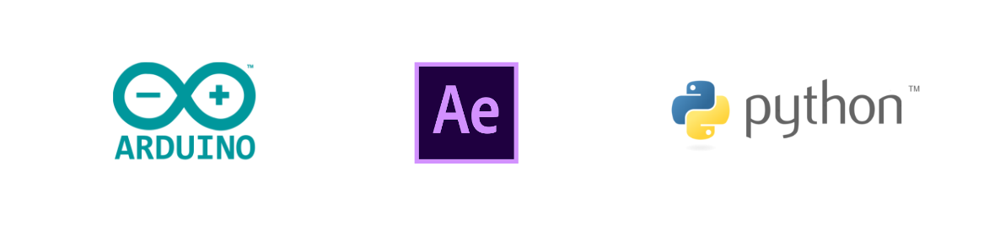
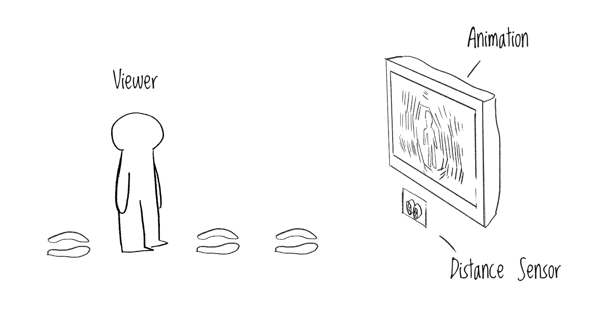

DISTANCE & UNDERSTANDING
Digital Interactive Installation · 2020
Overview
Distance and Understanding is a digital interactive installation that reflects the process of knowing and understanding a person with the change of the psychological distance to that person. It is mainly composed by two parts, a distance sensor and an animation series. As viewers approach to the screen, they become more intimate to the person in the animation.
Tools
Arduino
Python
Adobe After Effects
Pocreate
Concept
As social beings, we tend to behave in a way that conforms social norms and expectation when interacting with others, but deep down, we are more complex than we appear to be. In public, especially on social media, our behaviors are usually more performative, as we attempt to build self-identities that we wish to present to others. While in private, we are more likely to follow our instinct and to reveal vulnerability. It is meaningful to contemplate the process of how we know a person in our daily life, since it reflects the way we perceive the signs presented by others as well as the way we create signs to signify ourselves.
how does it works?
I employed Arduino, Adobe After Effects and Python to create this installation. It is mainly composed by two parts, a distance sensor and six clips of short animation in abstract hand-drawing style. Each clip is approximately two-second long and represents a different stage of knowing the animated person. The distance sensor measures the physical distance between the installation and the viewer, a concrete representation of the psychological distance between the viewer and the animated person.
As the distance changes, different clips will be triggered. When the viewer is standing far away from the installation, the animation only shows the person sharing their happy moments on social media or performing on the stage. As the viewer approaches to the installation, the more personal and vulnerable side of the person is revealed.
animation screenshots
The six screenshots below correspond to six stages in the animation, from the least intimate to the most intimate.
research & inspiration
Jim Campbell is known for his LED light works such as Vertical Repixelated and 7344 Stills. He probed into questions of human perception via displaying videos on screens composed of LED lights. Contrary to my work, in Campbell's works, the further the audience stand from the screens, the clearer they see the whole picture, because they can only see meaningless LED light dots if standing too close to the screens. In an age when everyone is pursuing high resolution, Campbell provoked discussion on the relation between the quantity of information and human perception.
Vertical Repixelated (2019), Jim Campbell
7344 Stills (2003), Jim Campbell
The animation style I used was inspired by Hyukoh’s music video “Tomboy.” While pixel-perfect illustrations and animation have become progressively prevelant, I still prefer simple hand-drawn style that deliver warmth and intimacy.
prototyping with arduino and python
The creation of Distance & Understanding went through an iterative process. I created prototypes with random video clips and had my classmates to test them. Based on their feedback, I refined my Arduino and Python codes to smooth the interaction.
exhibition
Due to the impact of COVID-19, the exhibition of my project along with other students' was curated online. During the opening, I gave a five-minute presentation of my project in front of all students and faculty in our program. I will continue refining the installation and have more people interact with it after the pandemic.